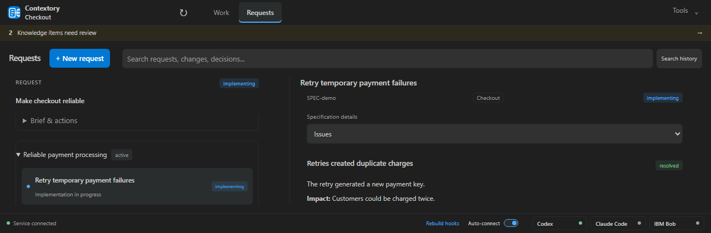
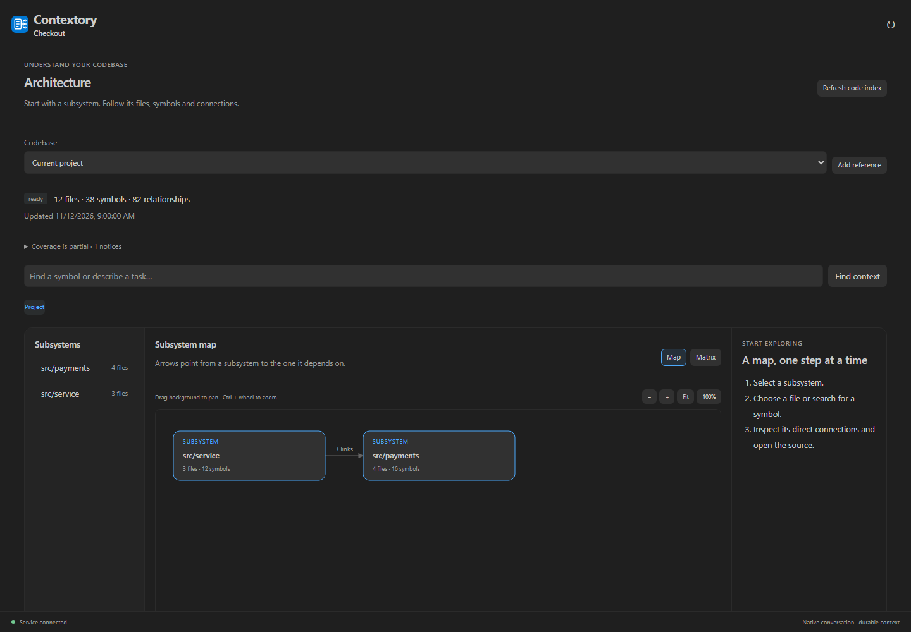
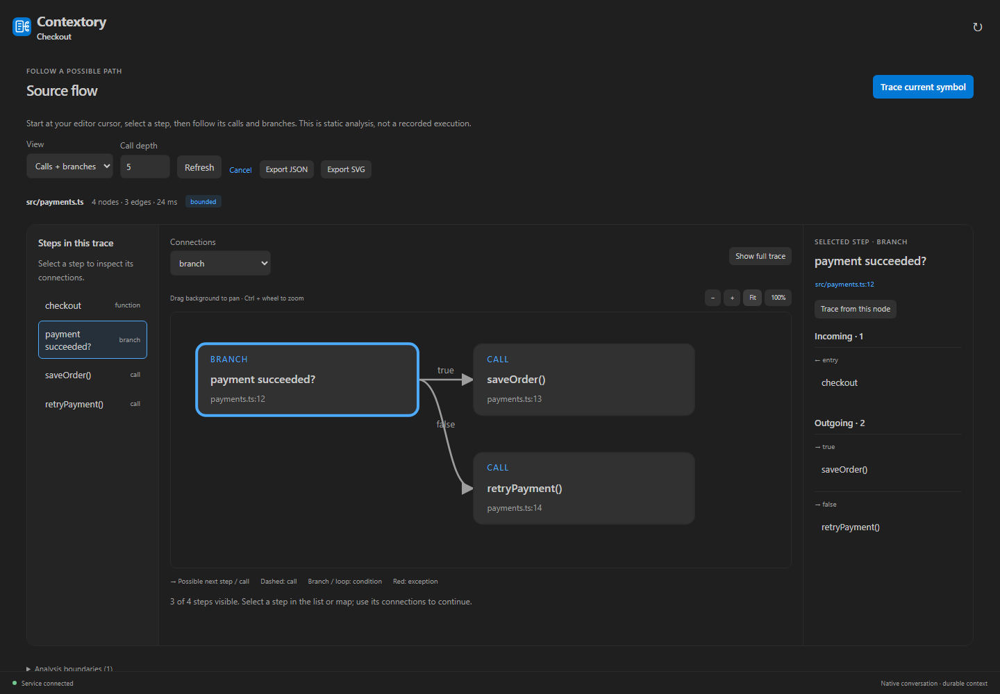
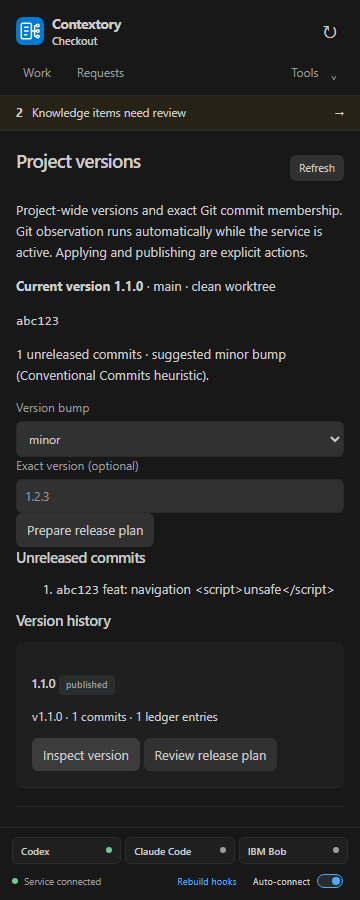
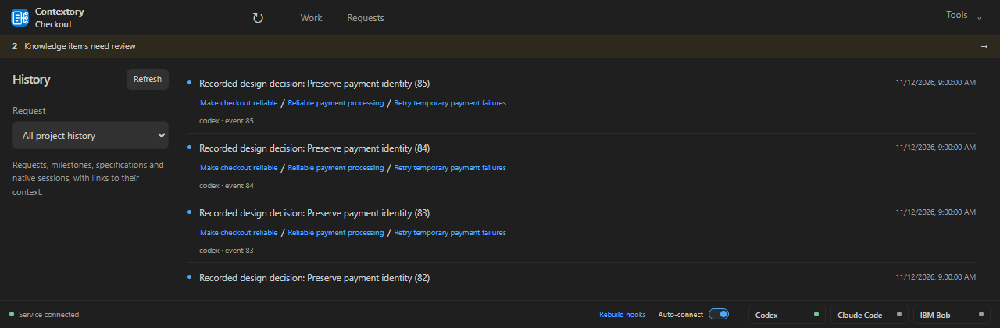

Contextory / Interface walkthroughs
Interface walkthroughs
Work and Requests
- Open Contextory and select the owning Project. Work shows the current specification, recorded criterion evidence, running checks, blockers and latest meaningful work. An empty project offers a new request.
- Choose Requests and + New request. Enter Title and What should change?, select affected projects when needed, then Create request. Open one request to inspect its plan; expand its brief and actions only when needed.
- Expand a milestone, select its spec and open Specification details for the plan, issues, decisions, evidence, outcome, usage or history. The evidence counts describe recorded verification; they do not estimate time remaining.
- Use Tools for Knowledge, Versions, History, Code map and Architecture. Request exports and relationship links remain available in the selected request or specification.

While a project switches, the UI shows Switching project and ignores replies from the previous project. Switching projects clears unfinished form drafts. During an operation, a progress indicator and status notice report activity or failure.
Inspect architecture and source flow
- Open Tools > Architecture or run Contextory: Explore Architecture. Select a subsystem, file and symbol in the coordinated map, tree and inspector.
- Use Explore connections and the relationship/direction filters. Matrix rows depend on columns; a reciprocal marker identifies direct dependencies in both directions.
- For detailed flow, place the editor cursor in a source function and run Contextory: Trace Flow from Here, or use Code map. Select a step to inspect calls, branches and source.
- Use zoom, Fit, background drag and source buttons. If no indexed connections appear, choose another scope or Refresh code index and review coverage notices.


Review Knowledge and Versions
- Choose the persistent review alert, or Tools > Knowledge. Review the queue first; expand definition search and file coverage separately when needed.
- For an observed baseline or pending change, read the exact proposal and enter a review reason before Approve baseline, Approve change or Reject. Only a human uses these review controls.
- Open Tools > Versions to inspect the current version, commits and release plans. Review version, files and changelog before applying; Publish is a separately authorized release action.

History, layout and keyboard use
- Open Tools > History, or the selected request/specification history. Filter its scope and use Load older activity to page earlier events.
- To use the horizontal layout, move Workspace Tasks to the editor Panel and resize it. Wide, short views place the request list beside the specification inspector.
- Use Tab to reach controls, Enter or Space to activate map nodes, arrow keys on focused canvases and Ctrl+wheel to zoom. The interface follows the current editor theme and high-contrast colors.

Resizing or docking preserves selection, drafts, expanded details and scroll within the same project. Narrow sidebars stack work and details; wide, shallow panels split them. Loading, errors and retained last-received data stay explicit. Screenshots show the production webview with isolated example records, not an authenticated native-agent chat.